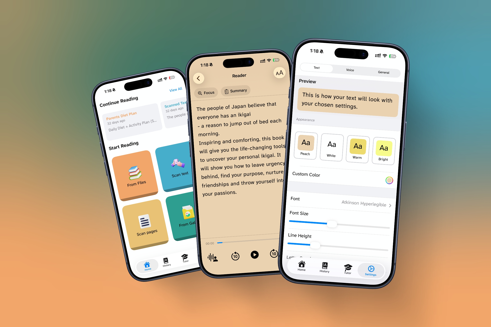

What's New in DyslexiaBuddy: A More Personal Reading Experience

A reading app should feel less like a collection of settings and more like a steady companion. Our latest work brings the reader, tutor, listening tools, and review practice closer together, so you can stay with the text instead of wrestling with the interface.
Phase 1 and Phase 2 began with a simple goal: make help available at the moment a reader needs it. The updates that followed extend that idea across the entire reading experience, from your first scan to the next time you come back.
Help that stays with the page
The tutor can now work from the document you are reading, rather than treating every question as a blank-slate chat. It is designed to explain in plain language, simplify a difficult passage, summarize the main points, and answer comprehension questions from the text in front of you.
That support is also easier to reach. Select a word or passage in the reader to define it, explain the sentence more simply, or begin listening from that exact point. The result is a more natural rhythm: read, pause, ask, and continue.
Built for the moment of confusion
The tutor is guided to use short, everyday language, break difficult words into syllables, and keep answers focused. It is there to help you move forward, not bury you in another long explanation.
A reader that follows along with you
Listening is now more connected to where you are on the page. DyslexiaBuddy can keep the current sentence visible while giving the spoken word a stronger highlight, helping your eyes and ears stay in the same place.
- Tap a word to start reading there.
- Use the floating mini-player to pause, skip, and resume without leaving the page.
- See your place, time remaining, and a clear route back into a document.
- Keep playback going across the app and from the lock screen when you need to step away.
Turn difficult words into useful practice
Phase 2 adds a way to return to the words that slowed you down. When you ask for help with a word, DyslexiaBuddy can keep it in a review collection and bring it back when it is time to practice again. Correct answers move a word further out; a miss brings it closer, so review stays useful instead of repetitive.
There is also a dedicated flashcard review surface, including a quick swipe-to-grade flow. It gives readers a small, practical bridge between understanding a word today and recognizing it more easily next time.
More choice, less friction
Reading comfort is personal, so the app now makes more room for it. New appearance controls include named reading themes, a Night option, highlight choices, bold-text support, and an option to follow your system appearance. The voice library is easier to browse too, with personas, search, recents, and clearer voice categories.
For longer documents, you can use a table of contents, a progress map, and in-document search to get to the part that matters. Imported text is cleaned and segmented before you read, helping scanned pages and PDFs feel more like a real reading surface.
What this means day to day
The point of these updates is not to add more buttons. It is to make the next helpful action obvious: resume the sentence, hear a word, ask for an explanation, practice what was hard, or simply change the page until it feels comfortable.
We will keep refining DyslexiaBuddy around that idea: a calmer path from a difficult page to a confident read.
Ready to read with a little more support?
DyslexiaBuddy is ready when a page feels like more work than it should.
Download DyslexiaBuddy